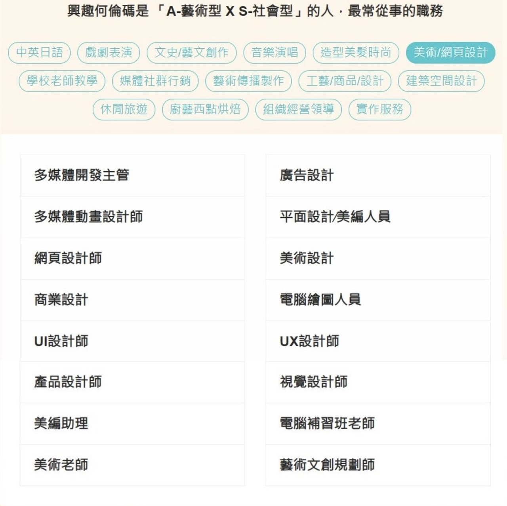

興趣何倫碼測驗
Overview
這份測驗在看什麼
Holland 興趣測驗將人與環境分成六大類型（RIASEC）。我在這一頁用最短的方式整理：我的結果重點＋常見職涯參考。
Insight
我怎麼把結果用在職涯選擇
測驗不是貼標籤，而是幫我把「喜歡的工作方式」變成可採取的策略：選環境、選角色、選學習方向。
對應到我適合的工作方式
- 清楚規則：流程與規格明確、可驗收（偏 C）
- 可創造：能把資訊呈現得更好用、更好懂（偏 A）
- 可累積：作品/報告可持續迭代、逐步變強
下一步學習清單（可替換）
- SQL：JOIN、子查詢、彙總報表（每週固定練 2–3 題）
- ERP：採購/庫存/財會模組概念（把流程畫出來）
- 系統分析：用例/流程/資料欄位/驗收條件（做成模板）
面試可用的一句話
我喜歡在有清楚流程與規則的環境中把事情做準，同時也會把資訊整理成好理解的呈現方式，提升使用者效率。
Reference
常見職業類型
把結果對照到職涯方向時，可以從常見的職業分類快速找到相近領域。
對我有幫助的看法
- 用「我喜歡的工作方式」去選擇環境與角色，而不是只看職稱
- 把特質轉成能力：流程理解、資料正確性、呈現清楚
- 用作品/專題累積證據，讓方向更具體
職業圖表

圖二：此類型最常從事的職業